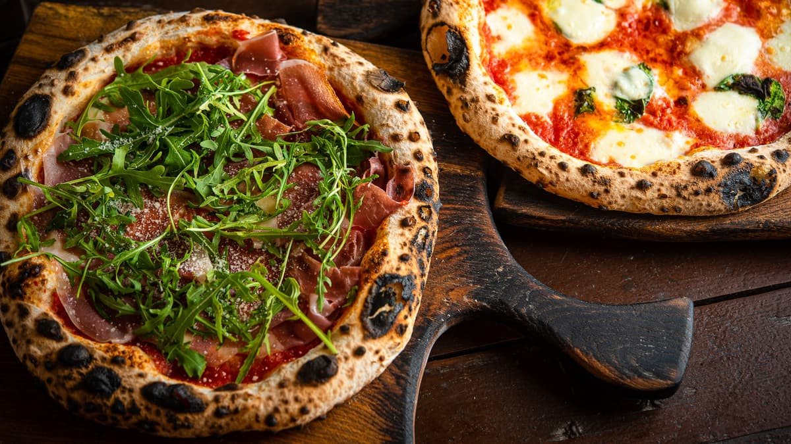

Nikita Rõbakov и Bogdan Koort
Рецепт вкусной и дешевой пиццы
Самостоятельная работа
Что такое пицца???
Пи́цца — традиционное итальянское блюдо в виде тонкой круглой лепёшки из дрожжевого теста, выпекаемой с уложенной сверху начинкой из томатного соуса, кусочков сыра, мяса, овощей, грибов и других продуктов
Рецепт Пиццы
Вода - 200мл
Яйцо - 1шт
Мука - 3 Стакана
Растительное масло - 2 ст.л
Соль - 1 ч.л
Cыр моцарелла - 300г
Помидоры - 2шт
Колбаса вареная - 200г
Томатный соус
Copyright © Nikita Rõbakov и Bogdan Koort
Фон
...